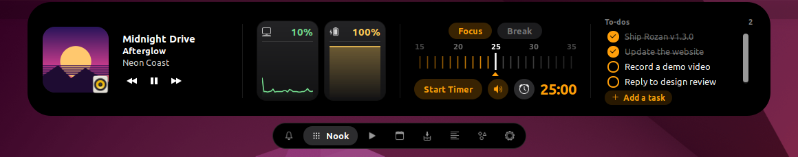
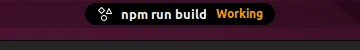
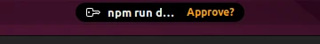
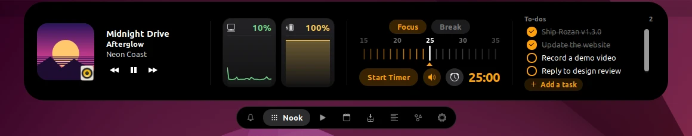
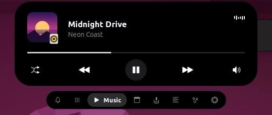
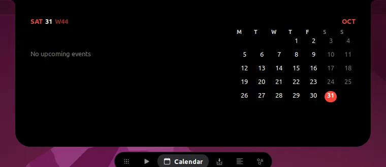
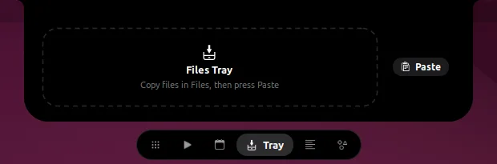
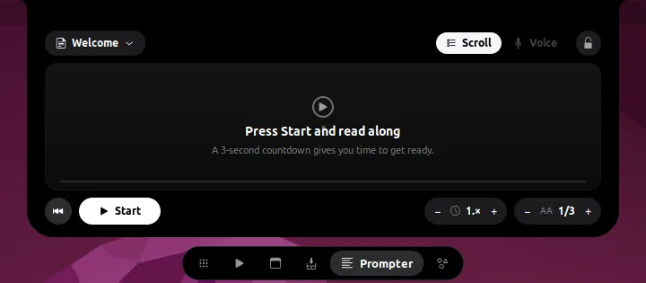
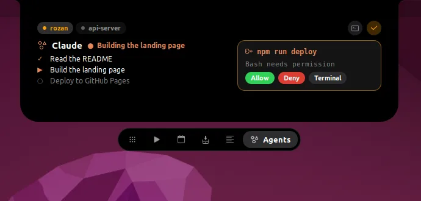
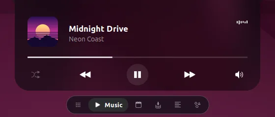

A notch for the top of your Linux desktop, inspired by NotchNook on the Mac. It shows what's playing, what's next and what your Claude Code sessions are doing, then opens on hover into a small control center.

Closed, the notch is a small black pill floating inside the top bar, like the Dynamic Island. It shows the most important thing happening right now and gets out of the way when a window goes fullscreen.


~/Downloads.Hover the notch to open it, then pick a workspace from the tab pill. Scroll down to open, scroll up to close, and scroll sideways to skip tracks. The gear at the end of the tab pill opens settings, where you can turn tabs off and change their order.





.txt scripts, a 3-second countdown, and speed and text size controls.
Right-click the tab pill to switch looks.

Rozan runs on GNOME Shell 42 (Ubuntu 22.04) in a Wayland session. GNOME on Wayland only finds new extensions at login, so log out and back in once after installing.
Download rozan-…zip from the latest release, then:
mkdir -p ~/.local/share/gnome-shell/extensions/rozan@hastashakiba.github.io
unzip rozan-*.zip -d ~/.local/share/gnome-shell/extensions/rozan@hastashakiba.github.io
# log out and back in, then:
gnome-extensions enable rozan@hastashakiba.github.ioThe repository is the extension, so you can link it in and update with git pull:
git clone https://github.com/HAstaShakiba/rozan.git
ln -s "$PWD/rozan" ~/.local/share/gnome-shell/extensions/rozan@hastashakiba.github.io
# log out and back in, then:
gnome-extensions enable rozan@hastashakiba.github.ioThe Agents workspace is fed by a hook. Add hooks/notch-hook.py to ~/.claude/settings.json
for the session, prompt, tool, permission, task and stop events; the
README has the full
snippet. A permission request waits up to 60 seconds for an answer in the notch, then falls back to the terminal.
| Hover, click or scroll down | Open the notch |
| Click outside or scroll up | Close it |
| Scroll sideways on the notch | Next or previous track |
| Right-click the tab pill | Switch between Classic and Liquid Glass |
| Click the gear in the tab pill | Turn tabs on or off and change their order |
NotchNook itself is a macOS app. Rozan is a free, open-source GNOME Shell extension in the same spirit: a notch at the top center of the screen with music, live activities and quick tools.
No. Rozan draws its own notch over the middle of the top bar, so it works on any display.
GNOME Shell 42, as shipped with Ubuntu 22.04, in a Wayland session. Newer GNOME versions use a different extension format and aren't supported yet.
Yes. The notch floats in the center of the top bar, over the clock and date menu. The collapsed notch shows the time instead.
Rozan (روزن) is Persian for the small opening high in a wall that lets light in.